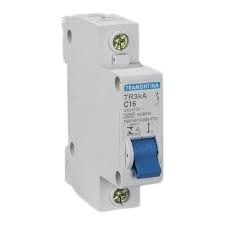
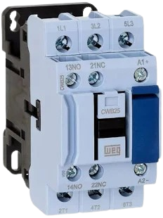
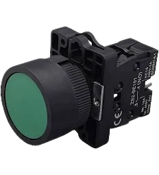
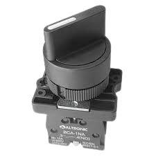
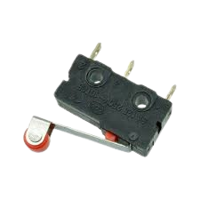
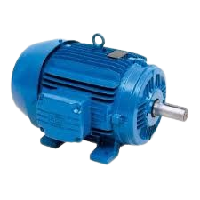
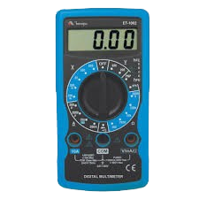
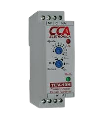
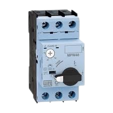
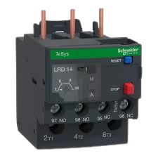

Disjuntor

É um dispositivo de proteção eletromecânico que funciona como um interruptor automático. Ele "desarma" e corta a energia quando detecta sobrecarga de corrente ou um curto-circuito, protegendo a fiação.
Contator

É um dispositivo eletromecânico utilizado para fazer o seccionamento (ligar/desligar) de cargas elétricas de alta potência a partir de um circuito de comando de baixa potência.
Botão de Pulso / Botoeira

É um interruptor de acionamento momentâneo. Seus contatos só mudam de estado (fecham ou abrem o circuito) enquanto o botão estiver sendo fisicamente pressionado. Ao soltar, uma mola o retorna ao estado original.
Chave de Retenção / Manual

Diferente do botão de pulso, esta chave possui uma trava mecânica interna. Quando você altera sua posição (ex: gira ou clica), ela mantém esse estado até que você a acione novamente.
Sensor Fim de Curso

É um interruptor eletromecânico acionado pelo contato físico de um objeto. Quando uma peça esbarra na sua haste ou rolete, ele envia um sinal elétrico avisando que o limite de movimento foi alcançado.
Motor Elétrico de Indução Trifásico

É a máquina elétrica mais utilizada na indústria. Ele converte energia elétrica trifásica em energia mecânica através da interação de campos magnéticos rotativos criados em seu estator.
Multímetro

É o principal instrumento de medição de um eletricista ou técnico. Ele consolida várias funções em um só aparelho, sendo capaz de medir Tensão (Volts), Corrente (Amperes), Resistência (Ohms) e continuidade.
Relé-Temporizador

É um dispositivo de comando que executa o chaveamento de seus contatos de acordo com um tempo pré-programado. Pode ligar algo após um tempo (retardo na energização) ou desligar após um tempo.
Disjuntor-Motor

É uma evolução do disjuntor comum, projetado especificamente para motores. Ele une a proteção magnética (contra curtos) e a proteção térmica regulável (contra sobrecargas prolongadas) em uma única peça, lidando bem com picos de partida.
Relé-Térmico (Relé de Sobrecarga)

Dispositivo de proteção focado em evitar o superaquecimento do motor. Ele possui lâminas internas bimetálicas que se deformam com o calor gerado pela alta corrente. Quando a corrente passa do limite por muito tempo, ele desarma o circuito de comando.